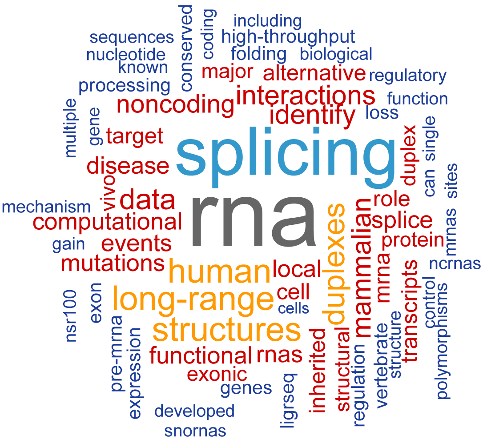

Tim Sterne-Weiler, PhD
Postdoctoral Fellow, Computational RNA Biology
Donnelly Centre for Cellular and Biomolecular Research
My research interests lie at the intersection of computational and biochemical methods to study gene regulation and dysregulation through RNA structure, function, and evolution. I'm currently a postdoc in the Blencowe lab within the Donnelly Centre at the University of Toronto.
